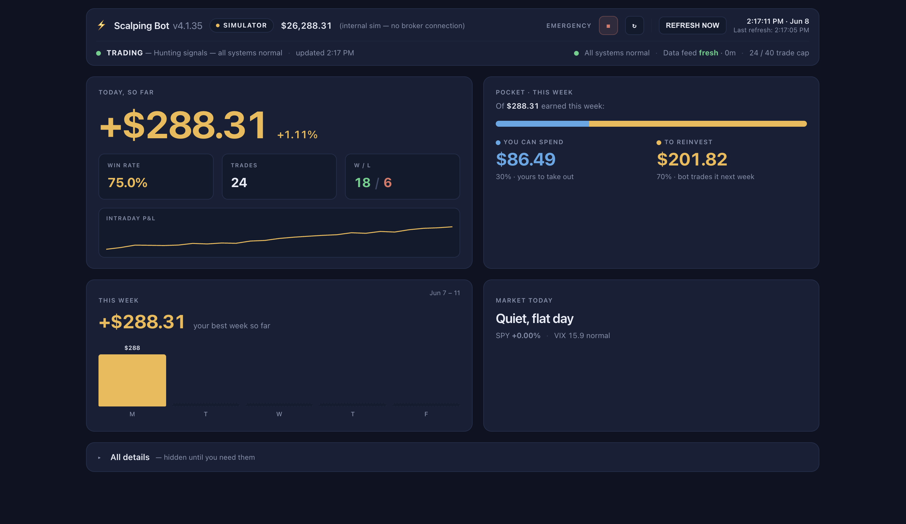

Fintech — Scalping Bot
Day-trading without the emotion — or the hours of staring at a screen.
Day-trading punishes emotion and rewards focus — most humans can't sustain either. The Scalping Bot runs the strategy on its own, shows take-home vs reinvest at a glance, and lets you check in from anywhere. Invented, architected, and built end-to-end by directing LLMs.
